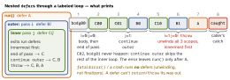

swift · folio
In one line: Every { } is a scope, and every way out of it —
end, return, break, continue, throw — runs that scope’s
defers last-in first-out, innermost scope first. A label names a
loop/if/do/switch so one break/continue leaves
several scopes at once; guard binds into the enclosing scope and must leave it;
patterns (case let x?, where) turn loops and conditions into filters.
Download PDF Print view LaTeX source

enum E: Error { case boom }
func run() throws {
defer { print("A") } // fn scope
outer: for i in 0..<2 {
defer { print("B\(i)") } // per outer pass
for j in 0..<3 {
defer { print("C\(i)\(j)") } // per inner pass
if j == 1 { continue outer }
if i == 1 { throw E.boom }
print("body\(i)\(j)")
}
}
}
do { try run() } catch { print("caught") }
Labels — leave several scopes at once
outer: for row in grid { for v in row where v < 0 { continue outer } }
loop: while true {
switch next() {
case .end: break loop // plain break would only leave the switch
default: continue } // continue always targets a loop
}
parse: do { guard ok else { break parse }; step2() } // do/if: break onlyguard — bind for the rest of the scope, or leave it
guard let user else { return } // user usable BELOW, not inside
guard case .loaded(let items) = state else { return }
guard !xs.isEmpty, let f = xs.first, f > 0 else { throw E.boom }
guard let self else { return } // in a [weak self] closure (5.7+)else must exit: return, throw, break,
continue, or a Never call (fatalError) — falling through does not compile.
Optional binding & loop filters
if let name { greet(name) } // 5.7 SE-0345: = if let name = name
if let a, let b, a < b { } // comma = &&, left to right, each binds
if case let .some(x) = opt, x > 0 { } // pattern + Bool in one condition list
if let n = value as? Int { } // cast and bind in one step
for case let x? in optionals { } // [Int?] -> only the non-nil, unwrapped
for case .failed(let m) in results { log(m) }
for i in 0..<n where i.isMultiple(of: 2) { }
while let job = stack.popLast() { run(job) }
repeat { n /= 2 } while n > 1 // body runs at least once
for (i, x) in slice.enumerated() { } // i = OFFSET from 0, not an index
for t in stride(from: 10, to: 0, by: -2) { } // 10 8 6 4 2 (through: incl.)defer details · do as a scope
func f() -> Int { var x = 1; defer { x = 99 }; return x } // returns 1
for url in urls { let h = open(url); defer { close(h) } } // EVERY iteration
func g() async { defer { await h.close() } } // 6.4 SE-0493: async fns only
do { let tmp = heavy(); use(tmp) } // plain do = a scope: tmp gone at }Availability — runtime vs compile time
if #available(iOS 17, *) { new() } else { old() } // RUNTIME OS check
guard #available(iOS 17, *) else { return }
if #unavailable(iOS 17) { legacy() } // 5.6 SE-0290: `!#available` is invalid
#if os(iOS) // COMPILE time: code not built elsewhere* = “every other platform, from its deployment target”. Only
, combines it with other conditions — no :=||, no !.
switch — tuples, where, fallthrough
switch (x, y) {
case (0, 0): origin()
case (let v, 0), (0, let v): onAxis(v) // alternatives bind the same names
case let (a, b) where a == b: diagonal() // where = guard AFTER binding
case (1...9, _): small(); fallthrough // run next body, NO match check
case (_, 10...): edge()
default: break // an empty body must say break
}
if case 200..<300 = status { } // = if 200..<300 ~= statusErrors — catch patterns, try forms, typed throws
do { try load() }
catch let e as URLError where e.code == .timedOut { retry() }
catch DecodeError.missing(let key) { report(key) }
catch { log(error) } // implicit `error`
let a = try? load() // T? - nil on error (T?? flattened since 5.0)
let b = try! load() // traps on error
func map<T>(_ f: (Element) throws -> T) rethrows -> [T] // throws iff f does
func parse() throws(ParseError) -> AST // 6.0 SE-0413
do throws(ParseError) { try parse() } catch { fix(error) } // error: ParseError
func pure() throws(Never) // = cannot throw; throws = throws(any Error)
let r = Result { try load() } // outcome as a value; try r.get() rethrowsTraps
breakin aswitchinside a loop leaves the switch — label the loop.deferreads variables at exit, not at declaration; a trailingdeferas the last statement just runs immediately (warning).fallthroughskips the next pattern check and can’t enter a case that binds.try?erases why;nilfrom aT?function looks the same.enumerated()on a slice gives offsets, soslice[i]can crash — usezip(slice.indices, slice).guard let xinside a closure binds in the closure; theelsereturnleaves the closure, not the outer function.
Remember
“Exits run defers backwards, innermost first; a label picks the scope; guard
must leave it.”